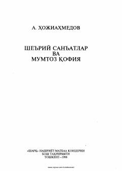

SSMumtoz she'riyatdagi badiiy san'atlar va qofiya ilmi bo'yicha o'quv qo'llanma.
Ushbu risola mumtoz adabiyotimizdagi she'riy san'atlar va qofiya ilmi asoslarini yoritib beradi. Kitobda badiiy san'atlarning turlari, ularning nazariy asoslari va mumtoz she'riyatdagi o'rni haqida batafsil ma'lumotlar keltirilgan.